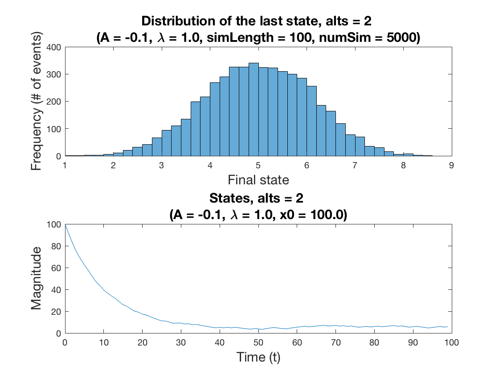

HILC_sim.m
This script is to (i) simulate an LTI system of an actuator that has probabilistic discrete choice behaviors with corresponding utility functions; (ii) see if the final state of each scenario that is documented immediately below indicates a potential statistical modeling problem. We have the following scenarios:
Scenario #1:
- constant external parameter w(t) = w_0 = 0
- binomial logit model for discrete choices (0, 1)
Scenario #2:
- w(t) = t (linear)
- binomial (0, 1)
- trinomial (-1, 0, 1)
Scenario #3:
- w(t) = t^2 (quatratic)
- binomial (0, 1)
- trinomial (-1, 0, 1)
(with the same set of simulation length = {100, 1000, 100000})
S. Bae, June, 2017
Contents
Input arguments
Customize input arguments here
scen = 1; % scenario number numSim = 5000; % number of simulation simLength = 100; % length of each simulation lambda = 1; % input scaler numAlts = 2; % number of alternatives in the choice set
Initialization
% Utility functions -- no exogenous param m1 = 1; m2 = 1; % Probability model with the given parameters on the utility functions prob1 = 0.5; % probability of alt1 (zero) prob2 = 0.0; % probability of alt2 (1) prob3 = 0.0; % probability of alt3 (2) % LTI system A = -0.1; B = 1; C = 1; D = 0; sys = ss(A,B,C,D);
Simulation
xArr = zeros(length(numSim),1); for s = 1:numSim % Create time vector DeltaT = 1; t = 0:DeltaT:simLength-1; % Total Simulation time % Generate input with probability u = zeros(length(t),1); for i=1:length(u) if(numAlts == 2) % binomial u(i) = lambda*sum(rand >= cumsum([prob1])); elseif(numAlts == 3) % trinomial u(i) = lambda*sum(rand >= cumsum([prob1 prob2])); elseif(numAlts == 4) % multinomial u(i) = lambda*sum(rand >= cumsum([prob1 prob2 prob3])); end end % Initial conditions x0 = 100; % Simulate linear dynamics [~,tsim,x] = lsim(sys, u, t, x0); % Store the last state in the array xArr(s) = x(end); end
Visualization
figure('Visible','on') % Final state distribution subplot(211); histogram(xArr); title(sprintf('Distribution of the last state, alts = %d \n(A = %.1f, %s = %0.1f, simLength = %d, numSim = %d)',... numAlts, A, '\lambda', lambda,simLength, numSim), 'fontsize', 15); xlabel('Final state', 'fontsize', 15); ylabel('Frequency (# of events)', 'fontsize', 15); % State trajectory subplot(212); plot(t,x); title(sprintf('States, alts = %d \n(A = %.1f, %s = %0.1f, x0 = %.1f)', ... numAlts, A, '\lambda', lambda, x0), 'fontsize', 15); xlabel('Time (t)', 'fontsize', 15); ylabel('Magnitude', 'fontsize', 15); saveas(gcf,fullfile(pwd,'/images/',sprintf('%s vis',datestr(datetime('now')))),'epsc'); disp('done.');
done.